Guía visual del sitio público de Mi Colmena y del acceso seguro al sistema. El número de la derecha indica la página física donde comienza cada tema; algunos temas ocupan más de una página.
Nota: el Panel Administrador y el Panel Apicultor se documentan en manuales independientes. Este manual cubre únicamente el Home público y el acceso.
Mi Colmena es una plataforma orientada al acompañamiento y la gestión de procesos relacionados con apiarios, colmenas, mantenimientos y actividades apícolas.
Este manual describe el funcionamiento del sitio web público (Home) y del proceso de acceso seguro al sistema. A través del Home, cualquier visitante puede conocer la organización, consultar los servicios apícolas, contactar al equipo y, si cuenta con una cuenta autorizada, ingresar a la plataforma.
Cada procedimiento se explica mediante capturas reales de la plataforma e instrucciones paso a paso, con marcadores, llamadas y diagramas, para que una persona que nunca haya usado el sistema pueda comprenderlo con facilidad.
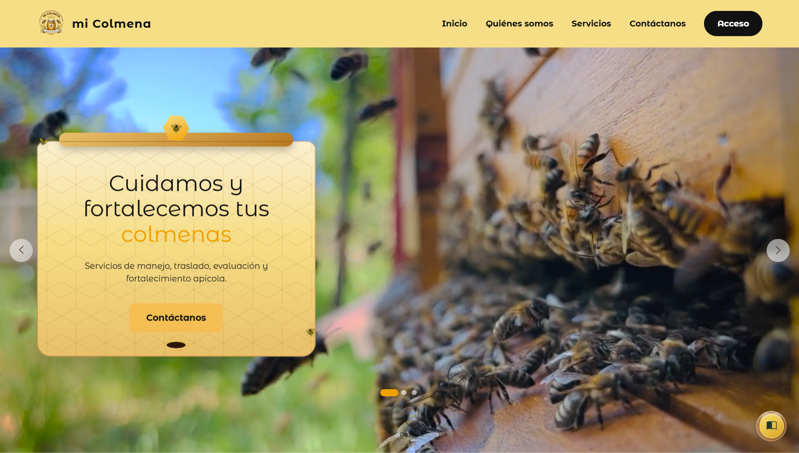
Conozca la organización y sus servicios.
Ingreso para usuarios autorizados.
2FA y recuperación de contraseña.
Brindar una guía clara para navegar por el sitio público de Mi Colmena y acceder al sistema de forma segura.
Navegar por el sitio público y reconocer sus secciones principales.
Conocer Mi Colmena, su equipo, misión y enfoque apícola.
Consultar los servicios y el detalle de cada uno.
Comunicarse con la organización mediante el formulario de contacto.
Acceder al sistema con un usuario autorizado.
Entender los mensajes de seguridad del inicio de sesión.
Recuperar la contraseña cuando no sea posible ingresar.
Utilizar la verificación en dos pasos (2FA) cuando el sistema la solicite.
Cada panel contará con su propio manual de usuario, con sus funciones, pantallas y permisos específicos.
Para visitar el sitio público y, si corresponde, ingresar al sistema, tenga en cuenta los siguientes requisitos.
Una conexión estable para cargar el sitio y enviar el formulario de contacto.
Computador, portátil, tablet o celular con un navegador actualizado.
Google Chrome, Microsoft Edge, Mozilla Firefox o Safari, en una versión reciente.
Un usuario previamente creado y autorizado por la organización.
Importante: Mi Colmena no tiene registro público desde el Home. Las cuentas de acceso son creadas y autorizadas por la organización; desde el sitio público no es posible crear una cuenta por cuenta propia.
Recuerde: puede visitar el Home, conocer los servicios y enviar el formulario de contacto sin iniciar sesión. El acceso solo es necesario para utilizar los paneles internos.
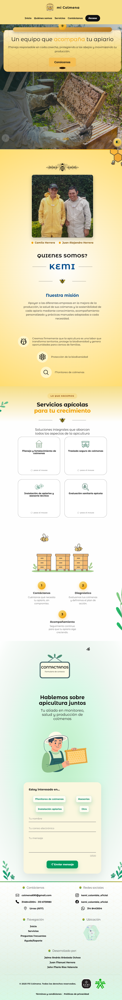
El Home es la página pública de Mi Colmena. Puede visitarse sin iniciar sesión y reúne la presentación de la organización, sus servicios, el formulario de contacto y el acceso al sistema.
Recuerde: el Home es público. El botón Acceso está reservado para usuarios con una cuenta autorizada.
La barra de navegación se ubica en el encabezado y permite moverse por las secciones públicas del sitio.
Las flechas y números son ayudas visuales añadidas sobre la captura; no modifican la interfaz.
El Hero es un carrusel interactivo: use las flechas laterales o los indicadores para moverse entre los tres slides. Cada captura se muestra completa y sin recortes.
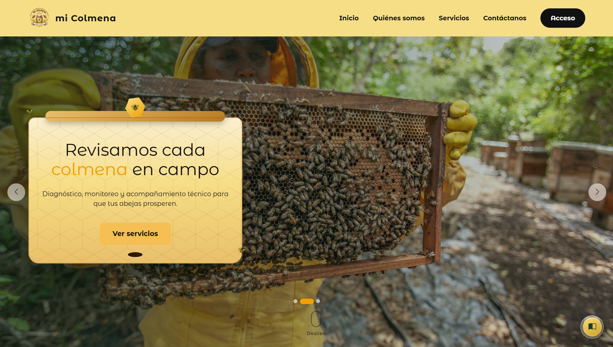
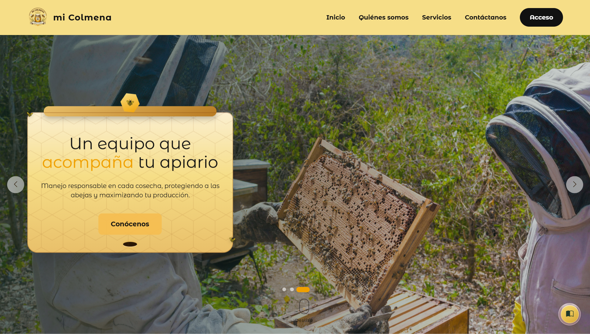
Flechas: avanzan o retroceden entre slides de forma manual.
Indicadores: señalan cuál de los tres mensajes está activo.
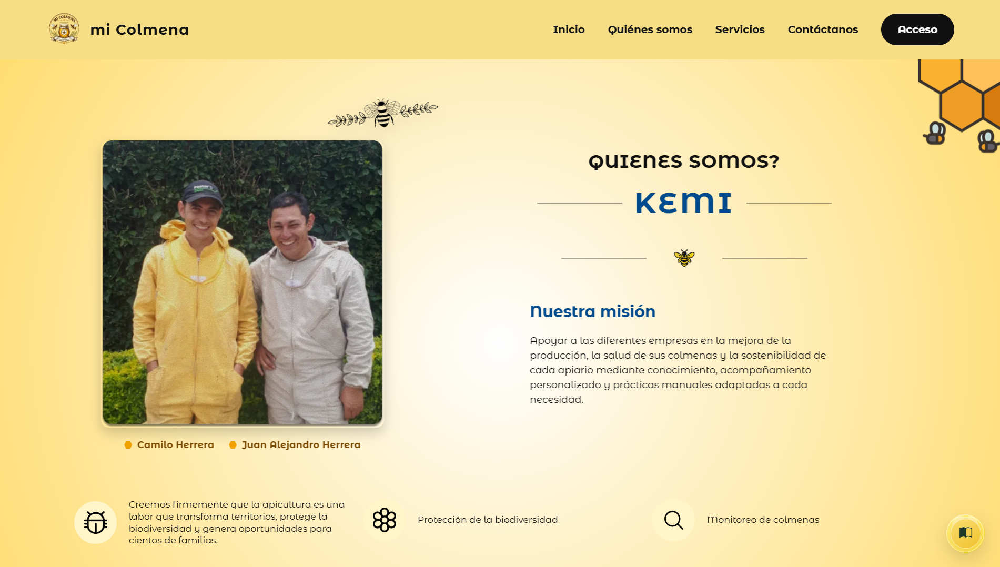
1 2 3 4 5 6 7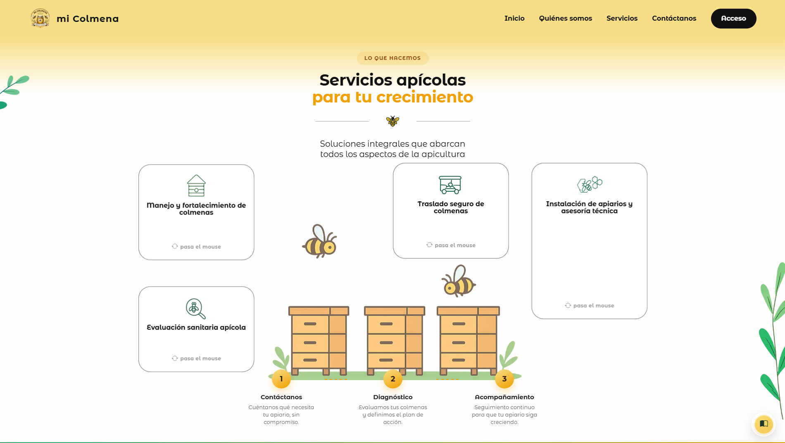
1 2 3 4Tarjetas interactivas: cada tarjeta muestra la indicación “pasa el mouse”. Al posicionar el cursor, aparece información adicional y la opción “más información” para abrir el detalle del servicio en un modal.
Siga la secuencia ANTES → HOVER → MÁS INFORMACIÓN para abrir el detalle de un servicio.
1. Localice la tarjeta del servicio que le interese.
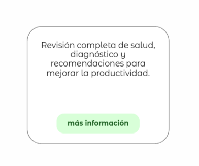
2. Pase el mouse sobre la tarjeta. 3. Aparece la descripción.
Se abre el modal
Ventana con el detalle del servicio y el botón Cerrar.
4. Seleccione “más información”. 5. Se abre el modal del servicio.
Al elegir “más información” se abre un modal con el detalle. Cada ventana incluye el botón Cerrar para volver al Home.
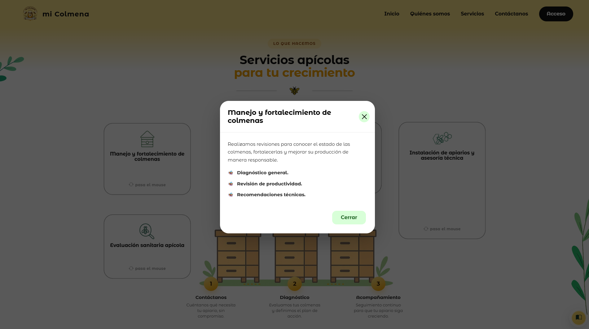
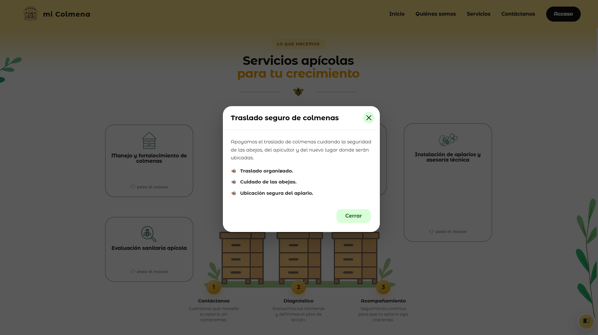
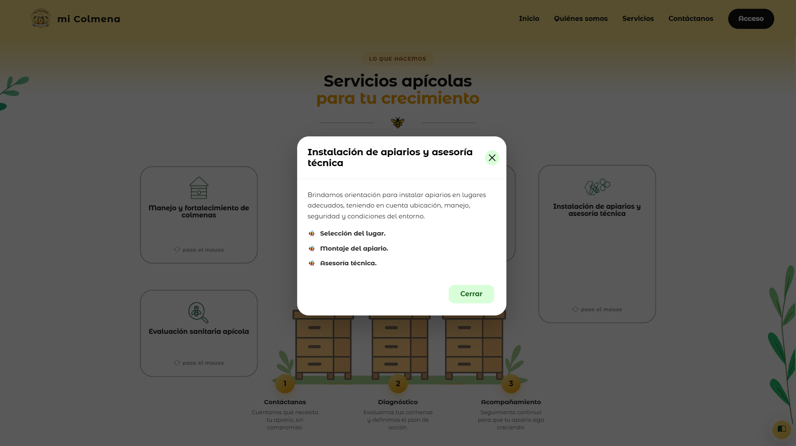
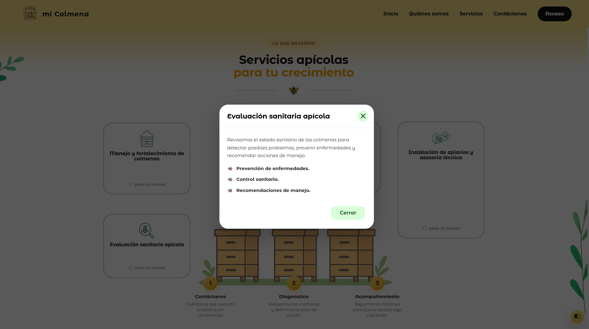
Para cerrar cualquiera de las ventanas use el botón Cerrar (o la “X”) que aparece en el modal. Los textos mostrados son los de la interfaz real.
La atención de Mi Colmena se organiza en tres momentos: contacto, diagnóstico y acompañamiento. La imagen inferior muestra el proceso tal como se presenta en el sitio.
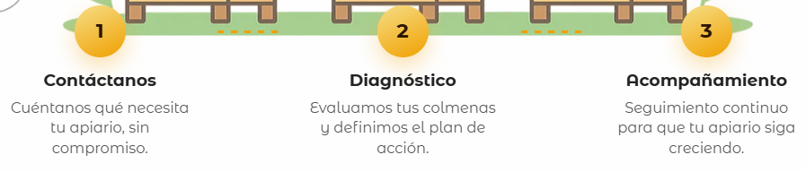
Cuéntanos qué necesita tu apiario.
Evaluamos y definimos un plan.
Realizamos seguimiento al proceso.
El recorrido de la abeja: el proceso inicia cuando el visitante envía su mensaje y avanza, paso a paso, hasta el acompañamiento técnico en campo.
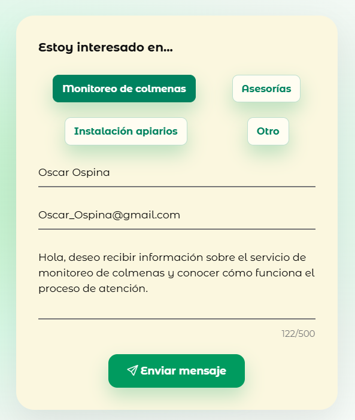
1 2 3 4 5 6A través de este formulario puede contarnos qué necesita su apiario. Diligencie los campos y envíe el mensaje; el equipo de Mi Colmena lo recibirá para dar inicio al proceso de atención.
El contador 5 aparece junto al campo de mensaje y muestra los caracteres escritos sobre el máximo permitido (500).
El contador refleja los caracteres escritos; en el ejemplo, 122/500.
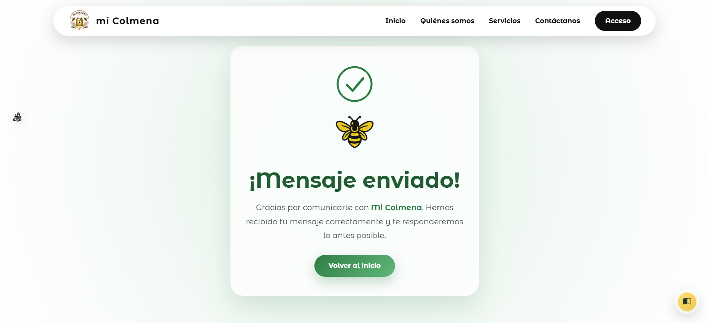
Al enviarse correctamente aparece “¡Mensaje enviado!” con el botón Volver al inicio.
Si ocurre un problema, el sistema informa al visitante dentro del mismo formulario. Verifique los datos e intente nuevamente. El manual no muestra correos internos ni buzones privados.
El pie de página agrupa la identidad, la descripción, la navegación, los datos de contacto, las redes sociales y los enlaces legales.
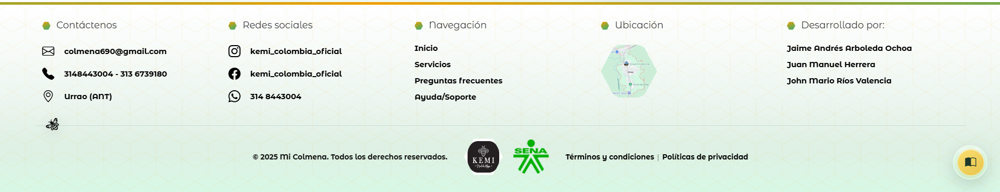
1 2 3 4 5 6 7Los enlaces 6 y 7 se ubican en la franja inferior del pie de página, separados por una pleca ( | ), y abren los documentos legales de Mi Colmena.
En el sitio hay un botón flotante con estilo Liquid Glass. Permite abrir este manual en cualquier momento.
Normal: se muestra solo el icono del libro.
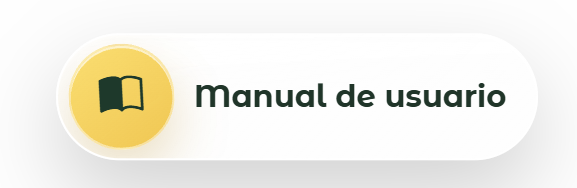
Hover: aparece el icono junto al texto “Manual de usuario”.
Al hacer clic, el manual se abre como un archivo PDF en una pestaña nueva del navegador, sin cerrar el sitio de Mi Colmena.
El ingreso es restringido. Solo pueden entrar las personas con una cuenta creada y autorizada.
El panel al que se dirige cada usuario depende de su perfil asignado.
Solo existe el inicio con usuario y contraseña autorizados.
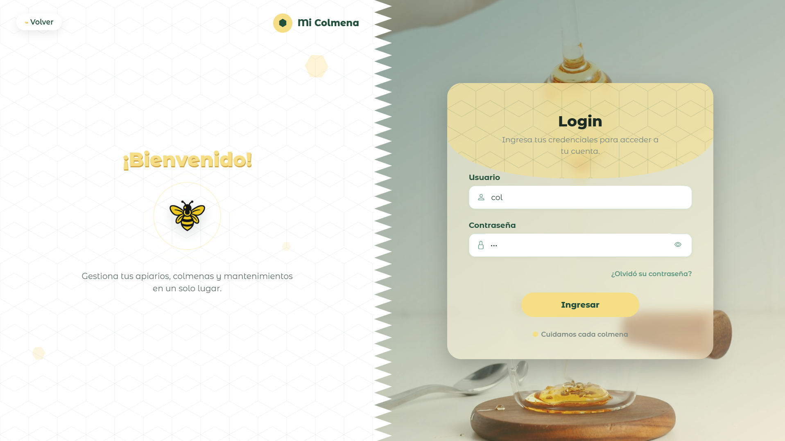
6 1 2 3 5 4Muestra Mi Colmena, el saludo “¡Bienvenido!”, una abeja y el mensaje institucional: “Gestiona tus apiarios, colmenas y mantenimientos en un solo lugar”. El botón Volver (6) regresa al Home.
Ingrese el usuario asignado en el campo Usuario.
Ingrese su contraseña en el campo Contraseña.
De forma opcional, use el icono del ojo para mostrar u ocultar la contraseña.
Presione el botón Ingresar.
El sistema valida las credenciales y dirige al panel según el perfil.
Ingresa al Panel Administrador.
Ingresa al Panel Apicultor.
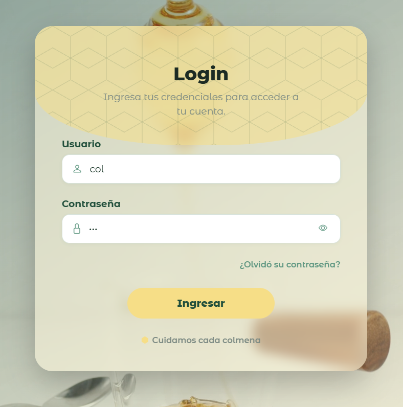
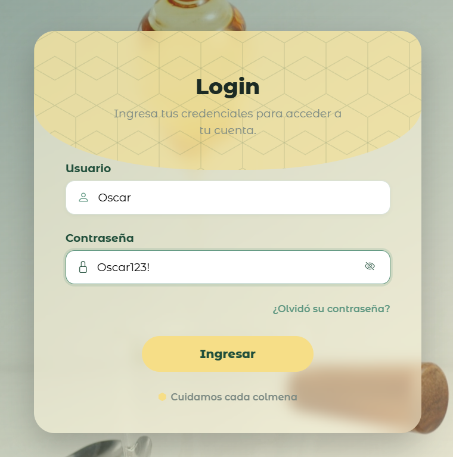
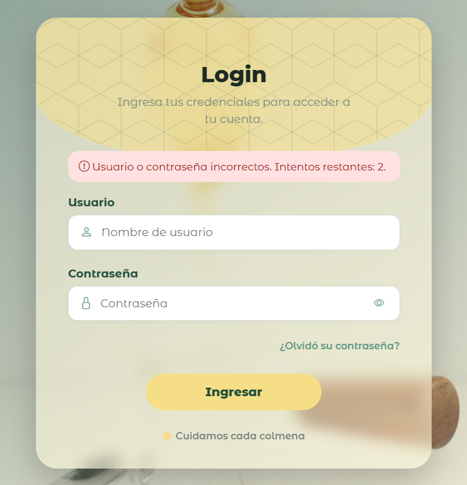
El sistema muestra: “Usuario o contraseña incorrectos. Intentos restantes: 2.”
El número de intentos lo indica la propia pantalla; el manual no asigna valores que no aparezcan en ella.
Si Usuario o Contraseña se envían sin diligenciar, el sistema no permite continuar y solicita completar los datos obligatorios.
Tras varios intentos fallidos, el acceso puede suspenderse temporalmente como medida de protección. Espere el tiempo indicado por el sistema antes de intentar de nuevo.
Una cuenta desactivada no puede ingresar. Debe solicitar la activación a la organización.
Si la cuenta no tiene un perfil asignado, no se dirige a ningún panel. La organización debe asignar el rol correspondiente.
Las tarjetas describen comportamientos de seguridad con ayudas editoriales; no representan alertas simuladas del sistema.
Después de validar usuario y contraseña, algunas cuentas requieren un segundo factor. El sistema envía un código de 6 dígitos al correo registrado.
El código llega al correo registrado. Por seguridad nunca lo comparta ni lo escriba en este manual.
La imagen es un recorte ampliado de la captura real para destacar la tarjeta de verificación; no se agregó ni modificó ningún elemento de la interfaz.
Escena real de la verificación. El recuadro inferior muestra ampliada la zona de reenvío.
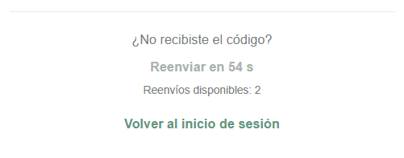
4 5Espere a que termine el temporizador para volver a usar Reenviar código y revise también la carpeta de correo no deseado.
Si olvidó su contraseña, use la opción ¿Olvidó su contraseña? del Login. En la ventana de recuperación solo debe escribir el correo asociado a su cuenta.
Por seguridad, el sistema no revela públicamente si un correo existe. No escriba códigos ni contraseñas reales dentro de este manual.
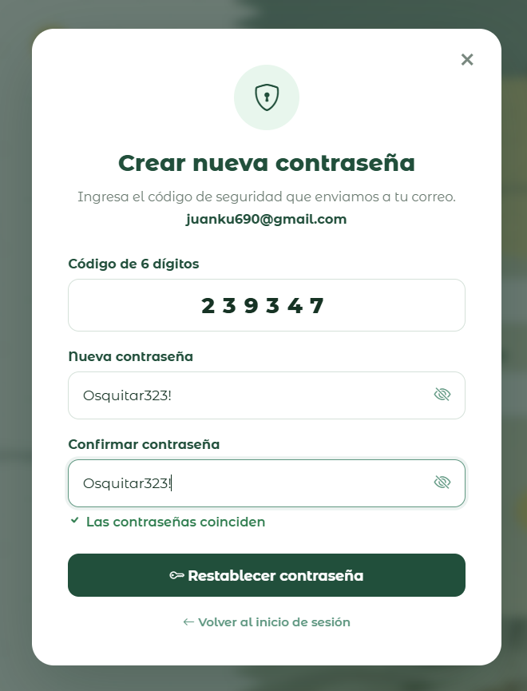
1 2 3 4 5 6La contraseña y la confirmación deben coincidir para completar el proceso. La ventana también ofrece “Volver al inicio de sesión”.
Cualquier código en la documentación se representa con el valor ficticio 123456; nunca escriba aquí una contraseña real.
Una vez que la nueva contraseña queda establecida, el proceso de cierre de sesión protege la cuenta. El siguiente diagrama resume los pasos; no representa una pantalla del sistema.
Tras el cambio, inicie sesión desde la pantalla de Login con su usuario y la nueva contraseña. Si tenía el sistema abierto en otros equipos, esas sesiones quedan cerradas por seguridad.
Ingresa al panel según su rol (Administrador o Apicultor).
Código al correo → verificar → panel según rol.
En ambos recorridos, el destino final depende del perfil del usuario. No existen registro público ni accesos con redes sociales.
Revise los datos y vuelva a escribirlos, cuidando mayúsculas y espacios.
Espere el tiempo indicado por el sistema antes de intentar de nuevo.
El código 2FA vence en 5 minutos; solicite uno nuevo.
Compare los 6 dígitos con el correo y vuelva a ingresarlos.
Use “Reenviar código” y revise correo no deseado o spam.
Inicie nuevamente la recuperación de contraseña desde el Login.
Vuelva a escribir la nueva contraseña y su confirmación.
Verifique su conexión e inténtelo unos minutos después.
Si el problema persiste con un usuario inactivo o sin perfil, comuníquese con la organización; estos estados solo pueden resolverse desde la administración de cuentas.
Solo usted debe conocer su usuario y contraseña.
El código de 6 dígitos es personal y de un solo uso por vencimiento.
Use únicamente el sitio y los correos de Mi Colmena.
Una cuenta protegida cuida su información y la de todo el apiario. Ante cualquier duda sobre un mensaje o correo, no ingrese datos y contacte a la organización.
Esta guía fue diseñada para facilitar el acceso a la información pública de la plataforma y ayudar a los usuarios a ingresar de forma segura al sistema.
“Tecnología al servicio de la apicultura.”
Manual de Usuario · Home y Acceso · 13 de septiembre de 2026